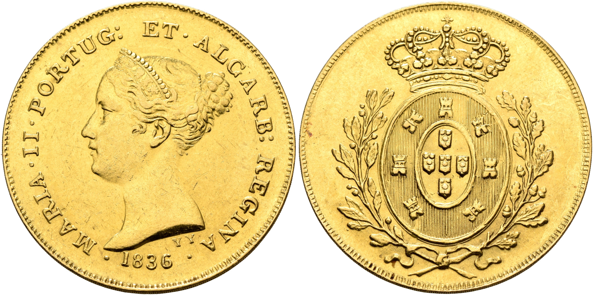

Império Numis
Leu Numismatik
Escrevi um artigo sobre estas moedas há uns tempos, que submeti a publicação na Revista Moeda e que foi rejeitado. A verdade é que, se submeto textos de carácter mais científico, dizem-me que a revista se quer de conteúdos ligeiros, no âmbito do coleccionismo; ao passo que, se submeto textos ligeiros, me dizem que a revista se quer estritamente técnico-científica.
Julgo que tudo terá que ver com o espírito da inquisição, que lentamente se vai instalando na sociedade portuguesa. De modo que, se algum dia a Revista Moeda terminar, não me parece que isso se possa dever, quer à falta de conteúdos, quer à falta de interesse nos conteúdos.
Há uma vector que sempre sobressai nas sociedades em decadência - o desprezo pela cultura.
Em Portugal, já há mais de 20 anos que ninguém pode chumbar nas escolas. O processo obriga a uma burocracia infindável, que apenas é accionada em casos extremos. Assim, sob o lema da inclusão, nivelou-se a sociedade "por baixo", estando actualmente criados dois sistemas educativos (um privado e outro público), que conduzem a modelos e graus de educação formalmente iguais mas substancialmente distintos.
Tudo começou com a necessidade de cumprimento dos critérios de convergência para a adesão à moeda única, que implicava também padrões de alfabetização. Pelo que, à boa maneira portuguesa, arranjou-se maneira de fingir essa alfabetização.
Os resultados estão à vista. O alunos entram nas universidades sem saber ler nem escrever e até se pode dar o caso de lá saírem 5 anos depois, doutorados, e continuarem a não saber ler nem escrever; nem isso lhes interessa para nada, porque não serve para ganhar dinheiro; até porque burros são os que se dão ao trabalho de fazer coisas que não servem para nada...
De modo que, na segunda década do século XXI, a moda chegou em força às casas de leilões de numismática, que parecem eficientes na contabilização do lucro e menos predispostas ao estudo.
Em 26 de Abril de 2026, no leilão 13 da "Império Numis", foi levado à praça o lote 221, identificado da seguinte forma:
“Portuguese Monarchy; D. MARIA II, Peça 1836 Ouro Reverso Aramas de D. Pedro; A.G.2006 M2 14.09 Bela (Atualmente não consta no AG)”.
Em Julho de 2024, no entanto, a “Leu Numismatik” tinha já levado à praça, no leilão online 30, sob o lote 4223, um exemplar com as mesmas características, sendo que se apresenta a tradução do texto publicado no respectivo catálogo:
“Um exemplar inédito e de grande importância da moeda de 7500 Réis de 1836, referente ao reinado de Maria II.
PORTUGAL, Reino. Maria II, Educadora (1834-1853). 7500 Réis de 1836 (Ouro, 32 mm, 14,32 g, 11 h), padrão. Lisboa, Birmingham ou Londres. MARIA•II•PORTUG:ET• ALGARB:REGINA•1836• Cabeça diademada de Maria II à esquerda; assinatura YY abaixo. Reverso: Brasão coroado entre ramos de oliveira e carvalho. Costa -. Gomes -. Aparentemente inédita e de grande interesse. Marcas muito pequenas no anverso; de resto, em excelente estado de conservação.
Este exemplar de 7500 Réis (Peça), aparentemente inédito, com bordo serrado, é uma das mais importantes raridades da cunhagem de Maria II. Em 1836, Portugal adotou o sistema monetário decimal. Durante esta transição, vários padrões, principalmente com as novas denominações, foram cunhados. No entanto, este exemplar excepcional ainda representa o antigo sistema monetário. O desenho do anverso é conhecido do padrão mais comum de 500 Réis (Gomes E12. 09), enquanto o cunho do reverso foi anteriormente utilizado para as moedas de 7500 Réis de Pedro IV (Gomes 09.01). A casa da moeda de origem é incerta; possíveis locais incluem Lisboa, Birmingham e Londres. É possível que William Wyon, o conceituado gravador-chefe britânico da Casa da Moeda Real, que visitou Lisboa no final de 1835 para desenhar um novo retrato para a cunhagem portuguesa, tenha sido o responsável pelo desenho do anverso deste padrão. Contudo, a assinatura YY sugere um gravador diferente e desconhecido, o que apenas aumenta o mistério e a importância da moeda.”
O exemplar da LEU entrou no mercado com o preço base de 2000 euros e marcou, a final, 12.000.
Já o exemplar do Império entrou a 2000 e ficou em casa.
Julgo que esta moeda estará a ser alvo de estudo por um numismata muito mais competente do que eu na cunhagem mecânica e a quem tive o gosto de alertar para a falsificação.
Para já, deixo a foto dos exemplares, com uma epigrafia e retrato que nada têm a ver com os cunhos de Wyon, mas com aqueles que posteriormente se fizeram nas moedas de D. Maria, revelando-se um evidente anacronismo.